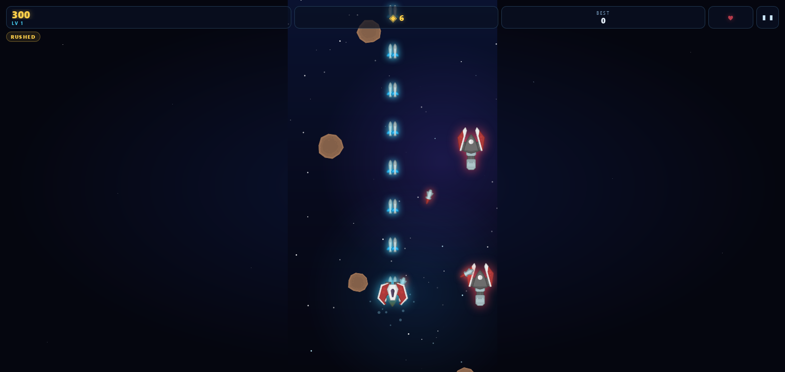

Cosmic Defender
Вертикальный космический шутер: рой врагов, метеоры, девять кораблей, апгрейды оружия и рекорды. Играть бесплатно в браузере без установки.
Играть прямо сейчас
Об игре
Классический вертикальный шутер в современной подачке: корабль внизу, сверху накатывают волны врагов и метеоры. Управление — перетаскивание или стрелки, стрельба автоматическая. За бой начисляются золото и опыт: на золото покупаются корабли, опыт открывает улучшения огня, скорости и брони.
Что внутри
- 9 кораблей с разными характеристиками
- Апгрейды: урон, скорострельность, скорость, броня
- Ежедневная награда и статистика полётов
- Работает с клавиатуры и с тач-экрана
Где играть
- На этом сайте: Cosmic Defender в браузере
- ВКонтакте / VK Игры — запуск из интерфейса VK
- Яндекс Игры — без установки, с прогрессом аккаунта
- RuStore и Google Play — мобильные версии (Android)
Частые вопросы
Нужно ли скачивать? Нет: игра открывается в браузере на телефоне и компьютере.
Нужен ли аккаунт? Нет. Прогресс сохраняется на устройстве, а на площадках (VK, Яндекс) — в аккаунте.
Игра платная? Бесплатная. Внутри есть реклама и покупки — они ускоряют прогресс, но не обязательны.